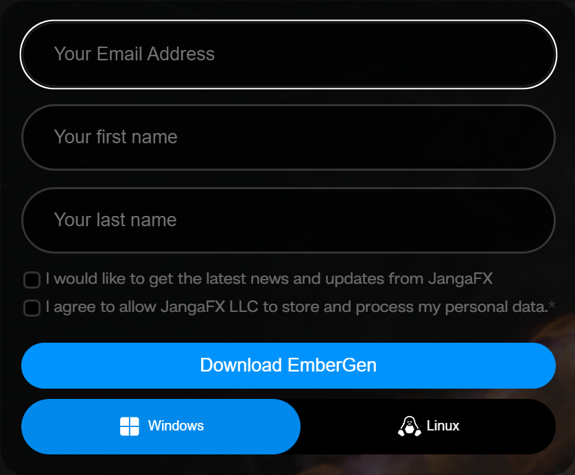
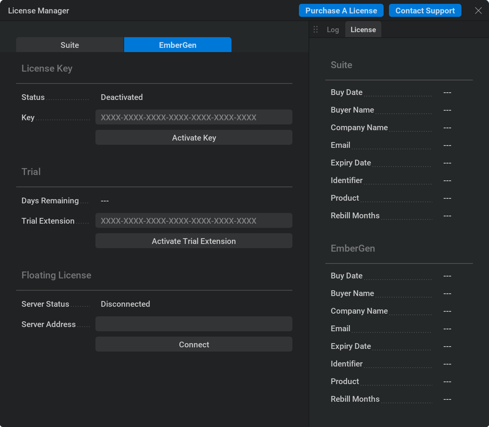
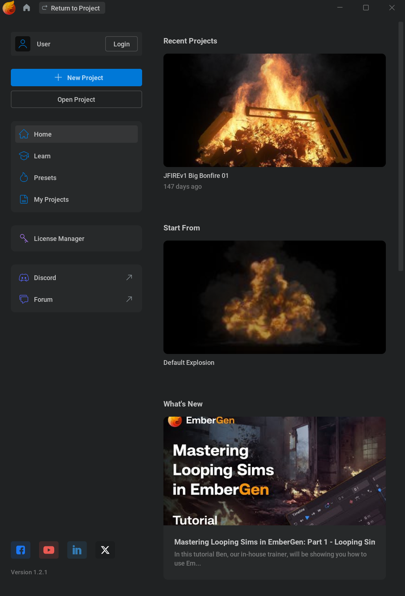
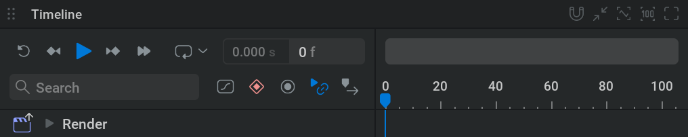
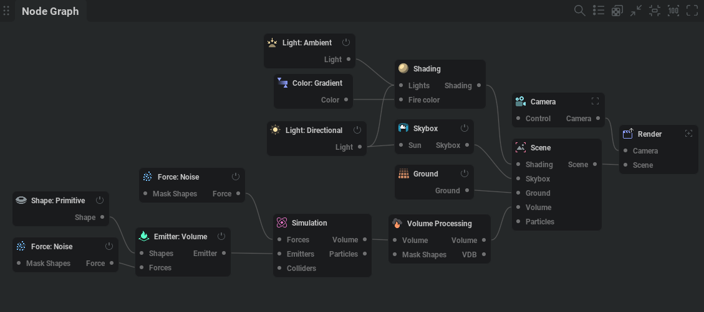
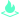
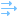
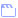
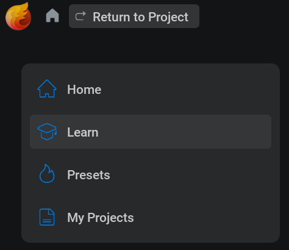

入门#
安装 EmberGen#
下载#
如果你已经拥有许可证，请前往 https://jangafx.com/software/embergen/download/
在左侧指定你想要的版本（默认是最新版），然后点击右侧的蓝色下载按钮。
若要获取试用版，请前往 https://jangafx.com/software/embergen/try
{kind=link}

页面会显示一个表单。
电子邮箱地址以及第二个复选框是必填项；该复选框允许我们保存表单中提供的信息。
填写完表单后，在底部选择你的操作系统（Windows 或 Linux），然后点击 下载 EmberGen 按钮。
该 embergen-latest.exe 文件会下载到你的硬盘。
安装#
双击 .exe 文件。
接受协议。
点击下一页、下一页、Install、Finish
如果你保留 启动 EmberGen 为勾选状态，软件会立即启动。
如果你取消勾选 启动 EmberGen，可以通过双击桌面快捷方式启动软件。
如果你同时取消勾选 Create a desktop shortcut，可以双击 EmberGen.exe 文件来启动 EmberGen；该文件位于 EmberGen 文件夹中，该文件夹通常位于 C:/Program Files/JangaFX
许可#
{kind=link}

安装完成后，运行 EmberGen，并在 Help 菜单中点击 License Manager… 来打开它。
在许可证管理器中，将你的许可证密钥输入到 “Key” 文本框。
然后按下 Activate Key 按钮。如果许可证成功激活，状态文字会从 Deactivated 变为 Activated。
如果出现任何错误，它们会以黄色显示在右侧。如果你的密钥无法激活，请通过电子邮件联系我们： support@jangafx.com，并使用右上角蓝色的 Contact Support 按钮，同时附上错误截图。
如果你没有许可证密钥，可以在我们的 官网价格页面购买。你也可以使用蓝色的 “Purchase A License（购买许可证）” 按钮前往该页面。
使用 EmberGen#
欢迎使用 EmberGen！
在本节中，你将学习软件的基础知识，开始为游戏或影视制作精彩的特效。
项目管理器#
{kind=link}

首次打开软件时，你会看到项目管理器。你随时可以使用左上角的 Home 图标进入或离开这个界面
 。
。在项目管理器中，你可以通过选择左侧的分类，快速访问预设或自己的项目文件。
预设是随 EmberGen 一起提供的只读 .ember项目文件。
它们可以作为你创建特效的良好起点，也可以作为学习参考。
预设存放在 EmberGen 安装目录中的 presets 文件夹内。（通常是 C:/Program Files/JangaFX/EmberGen)
请注意，预设与其他 .ember 文件没有本质区别。
如果找不到要使用的项目，可以点击 Open Project 按钮，通过文件浏览器手动查找你的 .ember 文件。
New Project 会加载默认预设。和任何预设一样，其中的所有内容都可以修改，所以即使它看起来不像你的目标效果也不用担心。
你可以使用 Ctrl+S 保存预设，或前往 File > Save
用户界面#
我们来看一下主用户界面。
如你所见，它分为四个区域：视口、时间轴编辑器、节点编辑器和属性面板。
这些区域都可以按你的偏好缩放：按住
 并拖动区域边缘即可调整大小；也可以点击每个区域右上角的切换面板全屏按钮
并拖动区域边缘即可调整大小；也可以点击每个区域右上角的切换面板全屏按钮  以全屏查看。
以全屏查看。
视口#

这里用于查看模拟、形状、力场以及场景中的其他内容。
你可以在视口中按住  ，并配合按下 Alt 来平移， Ctrl 来缩放， Shift 来倾斜视角。
，并配合按下 Alt 来平移， Ctrl 来缩放， Shift 来倾斜视角。
如果你习惯其他控制方案，可以在顶部菜单栏前往 Settings>Preferences，然后在 Camera 部分中按你的偏好修改 Control Mapping。
在视口顶部，你会看到几个选项卡和下拉菜单：
Scene 是默认选项卡，可用于查看和操作所有内容。
Render 选项卡用于预览将要导出的内容。
Export 选项卡用于查看已导出的图像。
在 Export 选项卡旁边有一个下拉菜单，可选择要从中观察的
 摄像机。
摄像机。该
 View 下拉菜单会列出可在视口中显示或隐藏的内容。
View 下拉菜单会列出可在视口中显示或隐藏的内容。如果视口中缺少某些内容，或某些显示项让你分心，首先应检查这里。
时间轴编辑器#
{kind=link}

这里从左到右可视化时间。
你可以播放或暂停模拟，使用
 或 空格键
或 空格键你可以重置模拟（回到时间轴开头），使用
 或 r
或 r
如果忘记某个快捷键，可以将鼠标悬停在按钮上查看它的快捷键。也可以前往 Shortcuts 部分，它位于 Settings>Preferences。
从开头播放时，你会看到一条蓝线移动。它表示时间轴上的当前时间。
按钮旁边的数字会以帧和秒显示当前时间。点击左侧的数值时，时间轴会在显示帧数和显示秒数之间切换。
请注意，模拟总是从一帧计算到下一帧。这意味着你不能倒放，也不能像普通视频那样拖动浏览。
节点图#
{kind=link}

这里用于管理创建模拟所需的构建模块。
你看到的独立模块称为节点。可以把它们想象成各自承担特定任务的小机器；这些机器组合在一起，就构成了产出最终效果的工厂。
节点通过连线连接，数据会从一个节点传递到另一个节点。
若要在节点图中导航，请按住  按钮并拖动。你也可以使用滚轮放大或缩小。
按钮并拖动。你也可以使用滚轮放大或缩小。
如果迷失了位置，可以使用右上角的  按钮重新居中节点，并使用
按钮重新居中节点，并使用  按钮重置缩放。
按钮重置缩放。
选择节点：
按住
并在节点周围拖出一个框，可以框选节点。选中节点后按 Delete 键即可删除节点。
复制和粘贴节点： Ctrl + C 和 Ctrl + V.
按住 鼠标左键 并拖动即可移动节点。
使用节点右上角的开关按钮禁用节点：
 。
。连接节点时，可以
从节点两侧的连接引脚点击并拖拽。也可以选中多个节点后按 Ctrl + L连接引脚始终会标明它需要连接到哪一个节点或节点类别。
你可以在节点图中右键单击并从菜单中选择节点来创建节点。也可以从连接引脚拖到节点图中的空白位置；这样会弹出一个菜单，列出适用于该连接类型的所有节点。
属性面板#

这里显示所选节点的设置。（如果选中的是同类型的多个节点，则显示这些节点的设置。）
Node Details（节点详情）： 这个选项卡显示所选节点的所有参数。
每个节点都有自己的一组选项卡，用来组织参数。
查找特定参数时，可以按 Ctrl + P
修改参数时，可以使用
点击数值，输入新值后按 Enter ；也可以点击并拖动数值滑块。你也可以在这些文本框中直接进行数学运算。例如输入 4*7/2+6-2 并按 Enter 会把该参数设为 18。例如，这有助于快速将数值相乘或减半。
有些参数不是数值，而是下拉菜单；可以用
点击打开，然后从菜单中选择一个选项。此外还有复选框，可以直接点击开启或关闭。
试着把光标停留在参数名称上。这样会显示一个文本框，说明该参数的作用。
参数右侧的还原图标
 会将参数重置为默认值。
会将参数重置为默认值。Favorites： 这个选项卡显示所有标记为收藏的参数。你可以在 Node Details（节点详情）选项卡中勾选任意参数旁边的星形图标
 来将其加入收藏。
来将其加入收藏。Timeline： 这个选项卡显示所有启用了关键帧的参数。若要了解关键帧，请查看我们的 关键帧动画 页面。
Randomized： 在这个选项卡中，你可以查看并调整被选中用于随机化的参数。这可用于创建模拟的不同变体。若要选择一个参数用于随机化，请 Shift +
点击  左侧的图标。已随机化的参数会用
左侧的图标。已随机化的参数会用  图标标记。更多信息请查看我们的 随机化 部分。
图标标记。更多信息请查看我们的 随机化 部分。
体素#
按下 B，或在视口的边界框 菜单中选择 view 选项后，你会看到一个包含模拟的盒子出现。这称为 边界框。
边界框由 体素组成，你可以把它们理解为三维像素。体素默认不存储红、绿、蓝值，而是存储燃料、烟雾、温度、火焰和速度等值。因此，烟雾越浓，对应体素中的烟雾值就越高。和像素一样，体素越多，细节越丰富。这些数值会根据软件中施加的力在体素之间移动。例如，将 Simulation（模拟）节点 Force 选项卡中的 Gravity multiplier 从 100% 设为 -100% 时，火焰和烟雾会开始向下移动，而不是向上移动。
为了进一步说明体素，我们来看一下 Domain 选项卡，它位于 Simulation 节点中。
Current size 这里显示场景中体素数量的计算结果。体素越多，边界框越大，细节也越多；同时模拟也会更重，软件运行会变慢。
Voxel count 这些值决定体素数量和边界框大小。如果模拟被裁切，无法放入边界框，就需要在这里增加体素。如果边界框中有空白空间，最好减少不必要的体素以提升性能。在任一参数中输入新值后，需要点击闪烁的黄色 Apply New Resolution 按钮，将更改应用到模拟。
Voxel size 体素所占据的空间。修改该参数不会改变体素数量，但会改变边界框大小。这个参数决定模拟的全局尺度。例如，对一把燃烧的椅子来说，将体素大小除以 2 不会改变椅子的尺度，但会让火焰更细致，看起来更像是一条燃烧的长凳，而不是椅子。

Upscaling 这是体素数量的倍率。边界框大小会保持不变。当项目接近完成时，这是一种较简单的增加细节的方法。请注意，提高体素数量会显著影响软件性能。
Fast upscaler 这种方法只会对遮罩阶段进行放大，而不是真正执行升采样。勾选后模拟会更快，但细节更少。

Zero position 轴上开始计算体素的位置。例如，使用 Center 并增加体素时，体素会均匀添加到该轴两侧。使用 Min 时，例如在 Z 轴上，体素会添加到顶部。
Import control 允许你将边界框作为子对象绑定到导入的网格或骨骼。
Bounds position 设置边界框在 3D 空间中的位置。
变换#
大多数对象/节点都可以在场景中移动，方法是使用位置、旋转或缩放参数，或使用操控器。
选中可移动节点时，视口中会弹出一个操控器。
操控器有三种：平移、旋转和缩放。
可以使用快捷键 Q、W 和 E 来选择它们，也可以使用视口左上角的操控器切换器。（如果看不到操控器切换器，请确认它已在  View 下拉菜单中勾选。）
View 下拉菜单中勾选。）
若要控制操控器手柄，请按住  并拖动。
并拖动。
节点#
我们来看一下最重要的一些节点分别负责什么。

Emitter（发射器）#
{kind=link}
该节点负责按照 Emission 选项卡中指定的数量，用燃料、烟雾或温度填充体素。
将多个发射器连接到 Emitters 引脚（位于  Simulation 节点左侧），即可将多个发射器添加到模拟中。
Simulation 节点左侧），即可将多个发射器添加到模拟中。
发射器需要一个发射来源。因此，它左侧有一个 Shapes 引脚。
发射始终来自连接的形状，因此形状越大，发射量也越多。
Shapes（形状）#
{kind=link}
这是一类用于添加或修改场景几何体的节点。 Shape: Primitive  节点在 Type 下拉菜单中提供了许多基础形状选项。
节点在 Type 下拉菜单中提供了许多基础形状选项。

Force（力）#
{kind=link}
这是一类会改变烟雾或火焰运动的节点。例如，Noise force 会向模拟中添加大量随机速度，使烟雾和火焰看起来更加湍动。
当一个力连接到 Simulation 节点的 forces 引脚时，它会影响整个模拟。如果它连接到发射器的 Forces 引脚，则只会影响与该发射器相连的形状所定义的体积。
 Simulation（模拟）#
Simulation（模拟）#
这个节点包含与模拟全局物理相关的所有设置，例如烟雾重量以及烟雾耗散速度。
一个图中只能有一个 Simulation（模拟）节点。
可以将多个 Emitters（发射器）、Forces（力）和 Colliders（碰撞体）连接到该节点左侧的引脚。
 Collider（碰撞体）#
Collider（碰撞体）#
这会让烟雾或火焰与连接到该节点的形状发生碰撞。
 Volume（体积）#
Volume（体积）#
和像素一样，体素也可以应用某些后处理效果，例如锐化。与 Shading 节点不同，Volume（体积）会修改体素内部的值来产生特定效果。
 Shading（着色）#
Shading（着色）#
这里包含体积如何响应光照的相关设置，也可以在这里找到火焰或烟雾颜色等属性。
Light（灯光）#
{kind=link}
顾名思义，这是一类用于照亮场景的节点。
试着调整它们 Node Details（节点详情）中的强度滑块，看看它们的作用。

Point 类似灯泡，会从空间中的一个可调节点发出光。 Spot 类似剧场中的聚光灯，会以锥形发出光。
Spot 类似剧场中的聚光灯，会以锥形发出光。 Directional 有点像太阳。根据 inherit sun color 的数值，它会根据角度改变颜色。
Directional 有点像太阳。根据 inherit sun color 的数值，它会根据角度改变颜色。 Ambient 会模拟天空反射，从各个角度添加一些光照。根据 inherit sky color 的数值，它会根据 directional lights 的角度改变颜色。
Ambient 会模拟天空反射，从各个角度添加一些光照。根据 inherit sky color 的数值，它会根据 directional lights 的角度改变颜色。
{kind=link}
 Skybox（天空盒）#
Skybox（天空盒）#

它控制场景中的天空类型。这里有几个选项：
Atmosphere 是最高级的选项，会模拟真实天空。若使用 Atmosphere 以外的任何选项，环境光和方向光的继承天空色或太阳色功能将不起作用。
Uniform Color 允许你为天空选择单一颜色。
Shade 会将天空变成从一种颜色过渡到另一种颜色的渐变。
None 会关闭天空，得到黑色背景。
 Ground（地面）#
Ground（地面）#
这里包含与场景中可见地面平面相关的所有设置。
 Scene（场景）#
Scene（场景）#
这里可以对场景应用视觉后处理效果，例如暗角或色彩校正。

Render（渲染）#
{kind=link}
该 Render 节点包含导出最终渲染所需的设置。在许多其他选项之外，你还可以在这里选择渲染通道。完整的渲染通道列表及其说明，请参阅我们的 渲染通道部分。
若要尝试默认导出设置，请选择 Render 节点（如果不存在就创建一个），并确保它连接到 Scene 和 Camera 节点。然后指定 Directory，并可选择设置 Filename 和文件格式。最后点击 Export Now 按钮。
导出相关选项相当多，详细说明见 Render Node 参考文档。使用默认设置时，只会将 RGB 颜色和 Alpha 通道导出到一个 PNG 翻页动画贴图中。
Flipbook（翻页序列）是游戏中常用的一种格式，可将整个效果放入一张图像纹理。如果你选择 Sequence 作为 Export Mode，则可以导出图像序列，也就是每一帧都会得到一个文件。这在 VFX 中更常用。
该 Render Passes（渲染通道） 选项卡包含 Source 和 Destination 列。 Source 列包含来自 EmberGen 的渲染通道，而 Destination 列表示输出文件/渲染图层。 R, G, B, A 旋钮表示颜色和亮度通道。
这个界面支持各种工作流和通道映射。
你可能会注意到形状不会出现在渲染中。这是默认设置，因为通常只需要导出效果本身。你也可以在 Render 节点中，通过从 Shapes Rendering 下拉菜单中选择选项来设置形状渲染方式；该菜单位于 Render Settings 选项卡中。
全部设置完成后，点击 Export Now 按钮，将文件导出到你的目录。
 Camera（摄像机）#
Camera（摄像机）#
这是渲染场景时所使用的观察视角。
你可以在视口顶部的  摄像机下拉菜单中选择摄像机来使用它；也可以选择 Camera 节点，并点击 Activate 按钮，该按钮位于 General 选项卡中。
摄像机下拉菜单中选择摄像机来使用它；也可以选择 Camera 节点，并点击 Activate 按钮，该按钮位于 General 选项卡中。
连接到 Render 节点的摄像机会决定导出时的观察角度。
在 Transform 选项卡中，你可以指定摄像机的位置和旋转。你也可以在通过摄像机观察时，通过在视口中导航来完成这些设置。
当你满意摄像机位置后，可以锁定摄像机，该选项位于 General 选项卡中，这样就不会意外移动它。
该 Display Resolution 参数位于 Display 选项卡，用于指定摄像机宽高比。你可以在视口中直观看到它。别忘了将它设置为与 Render 节点相同的宽高比，以获得正确结果。
该 Field Of View 参数位于 Display 选项卡，用于指定摄像机可见物体的角度。调整它类似于使用长焦镜头进行缩放。
 Export VDB（导出 VDB）#
Export VDB（导出 VDB）#
如果想在其他软件中渲染模拟，可以将其导出为 VDB。Maya 或 Blender 等其他软件可以读取这种格式。
Export VDB 节点需要连接到 Volume Processing（体积处理）节点的 VDB 引脚。
继续学习#
现在你应该已经对如何使用 EmberGen 有了基本了解。
如果你想了解关于 节点, 用户界面, 设置或具体操作方法的更多信息，请查看我们的 参考 页面。
{kind=link}

如果你是新手，Project Manager 中的 Learn 选项卡以及我们的 YouTube 频道 都是值得查看的地方。
你也可以打开 EmberGen 附带的预设，查看它们是如何搭建的，这会帮助你学到很多。
另一种很好的学习方式就是大胆尝试。由于 EmberGen 模拟速度很快，通常只需改变某个参数的值，就能很容易看到它的作用。
别忘了，你可以把光标停留在任意参数名称上，以查看该参数作用的说明。
如果你想展示作品或寻求帮助，欢迎加入我们的 Discord 服务器
祝你学习 EmberGen 顺利，
我们迫不及待想看到你将制作出怎样精彩的效果！